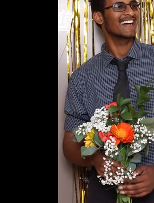

UC Riverside
Riverside, CA — Class of 2030
- General Chemistry Major · Pre-Med Track

General Chemistry Major · Pre-Med Track
Riverside, CA
I'm a freshman at UC Riverside studying General Chemistry on a pre-med track, studying to become a pediatrician. I believe the most impactful healthcare happens when you combine clinical skill with genuine empathy — recognizing when someone needs help before they even ask. This philosophy shapes everything I do, from co-founding a tutoring club that served over 200 students to volunteering at community events and serving as a certified lifeguard and BLS provider.
The people who need help most are often the least likely to ask for it. I witnessed this firsthand when I noticed Spanish-speaking families struggling at a community event. I took the initiative to add Spanish translations to every sign in my section — transforming an inaccessible space into one where everyone felt welcome. That experience taught me that effective leadership means noticing who's being left out and removing barriers before they have to ask.
Riverside, CA — Class of 2030
San Jose, CA — Class of 2026
Saratoga, CA
Medical Assistant Training Program
Tutoring Club
Certified 2026
Community Events
Silicon Valley CTE
Issued Jan 2026
Basic Life Support & cardiopulmonary resuscitation certification for healthcare environments.
Certified 2023
Red Cross lifeguard certification with water safety, rescue, and emergency response training.
Fall 2024
Recognized for academic excellence with a GPA above 3.5 during Fall semester.
200+ Members
Founded and led a peer tutoring initiative supporting over 200 students with academic success.
Grade: B
Achieved a B in Honors Chemistry, demonstrating strong analytical and problem-solving skills.
2019 – 2024
Active member of the school Jazz Ensemble, performing at various campus events and competitions.